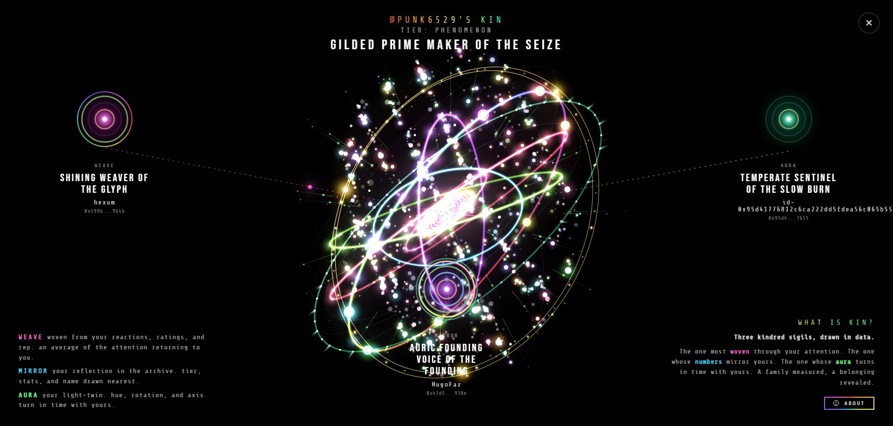

6529 identity portrait · manifesto & anatomy
Every 6529 wallet carries an identity, not chosen but accrued. Cards held, cards made, memes rated, days on the manifold, reputation earned.
The Sigils reads nine of these signals and projects them as an orbital portrait. A sun, rings, beads, threads, thorns, rays. Each wallet renders differently, deterministically, so your sigil is your own.
KIN is your constellation of three kindred sigils, quietly chosen from the one thousand four hundred most active accounts in the 6529 archive. Three threads reach outward from your sigil, each following a different signal.
MIRROR, your reflection in the archive. The sigil whose tier, holdings, and sigil name lie closest to your own.
AURA, your light twin. Hue, axis, and rhythm turn in time with yours, as if lit by the same lantern.
WEAVE, the attention returning to you. Woven from reactions, ratings, and reputation. An average of the eyes looking your way.
Together they form a small network map around you. A private star chart of the people your sigil already knows. Deterministic, which means your KIN is fixed for this moment in the data. As the archive breathes and the pool refreshes each day, the constellation shifts with it.

punk6529's kin
Data is pulled live from the 6529 API and refreshed every 10 minutes. As your stats change (a new meme, a new rank, a new card) your sigil evolves. The green dot in the corner signals live data. Click it to refresh manually.
All visual parameters are derived. Nothing is random. Your wallet address seeds the axis of rotation, the orientation of rare forms, the phase of every shimmer, so no two sigils move alike.
TDH thresholds. Each tier unlocks a distinct visual signature on top of previous tiers.
| Tier | TDH range | Unlock |
|---|---|---|
| UNBORN | 0 | no render, wallet shows "no archive found" |
| ECHO | <10K | baseline |
| SIGNAL | 10K to <100K | baseline |
| EMERGING | 100K to <500K | + particle density |
| RESONANCE | 500K to <1M | + second armillary frame |
| ANCHOR | 1M to <5M | + outer prestige ring |
| PILLAR | 5M to <10M | + sparkle density |
| MONUMENT | 10M to <15M | + softened vignette, aura bleeds out |
| LEGEND | 15M to <20M | + cosmic dust drift |
| PHENOMENON | 20M+ | + golden corona flash every 10s |
Every sigil carries a three-part name, a 6529 sigil name, shown under your tier.
The name is a modifier plus an archetype plus a suffix, chosen deterministically from your profile's dominant signals. The same wallet always gets the same name. With over fifty words per part, no two sigils read alike.
Examples: Golden Bearer of the Origin (Nakamoto holder) · Rising Maker of the Spark (early tier artist) · Ancient Pillar of the Ledger (deep TDH) · Luminous Herald of the Archive (high REP) · Dormant Drifter of the Unseen (fresh wallet).
A few things happening under the surface, for the curious.
0x00FF00 will render with a green heart. One starting with 0xFF00FF a magenta one. Your address is already your signature color before a single pixel is drawn.Does my sigil change over time?
Yes. As your TDH, REP, holdings, or artist credits change, your sigil evolves with the next refresh.
Does perf mode change my sigil's identity?
No. Perf mode only drops particle count, halos, and some shimmer math. Your axis, your name, your tier, every bead and pearl stay exactly the same.
Why does my sigil look different on another screen?
The colors are HSL based and render at native pixel density. Deeper panels and HDR displays show more saturated amber, sage, and rainbow than low gamut phone screens.
Can my sigil disappear?
Only if your TDH and your unique Memes both fall to zero, which is the UNBORN state. One meme on your wallet is enough to keep your sigil drawn.
Why is my sigil different from someone with almost identical stats?
Because the axis of rotation, the placement of rare forms, and every shimmer phase are seeded by your wallet address. Two wallets will never tilt alike.
My KIN looks empty, why?
You may not be in the pool of the top 1,400 accounts by boosted TDH, or your profile may not carry enough signal for all three lenses yet.
How is the KIN pool chosen?
The top 1,400 accounts by boosted TDH, refreshed automatically every morning.
Will my KIN change?
Yes. Both as the pool refreshes each day and as your own stats evolve.
Can two wallets share the same KIN?
Practically never. Matching across MIRROR, AURA, and WEAVE out of 1,400 candidates lands in one in billions territory.
Can I export my sigil?
Yes. PNG (still, 1080²), GIF (540², 12 fps, 12 seconds, seamless loop), or MP4 (native pixels up to 1080², 60 fps, 30 seconds, 16 Mbps — a full master-loop rotation at live cadence). Use the EXPORT button.
Does my wallet data leave my browser?
Only a read only request to the public 6529 API. Nothing is stored, nothing is tracked.